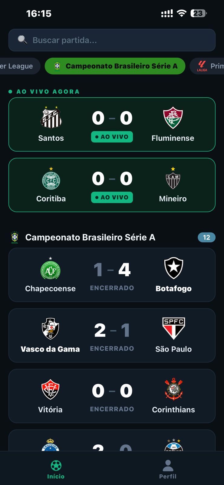

Marque as partidas que você assistiu, dê sua nota ao jogo, ao árbitro e aos jogadores, e veja sua temporada de torcedor virar estatística.
Funciona no navegador · Grátis · A partir de 13 anos

O que dá pra fazer
Marque o que assistiu, escreva sua resenha e registre se foi no estádio. Seu histórico fica todo em um lugar.
Avalie a partida, o árbitro, os jogadores e até a beleza do gol — todos na mesma escala de 1 a 5.
Gols, cartões e escalações do Brasileirão, Premier League, La Liga, Libertadores e Copa do Mundo.
Quantos jogos você viu, sua nota média, se você é pé-quente e quais times mais apareceram no seu ano.
Eleja quem decidiu e quem afundou o time. A narrativa de cada jogo, do seu jeito.
Acabou o jogo do seu time? O app avisa para você dar sua nota enquanto a opinião ainda está quente.